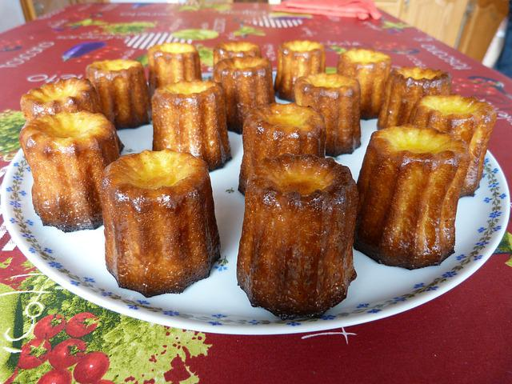

Canelés

Description
A canelé is a small French pastry flavored primarily with rum and vanilla, and its texture includes a soft, tender custard center and a dark, thick caramelized crust.
For 16 people
Ingredients
- 500 ml milk
- 1/2 vanilla bean
- 1 tbsp rum
- 100 g flour
- 250 g powdered sugar
- 50 g soft butter (+ 50 g to butter the molds)
- pinch of salt
- 2 whole eggs
- 2 egg yolks
Steps
- Boil the milk with the vanilla bean previously split and seeded and the butter.
- In the meantime, mix the flour and sugar in a bowl.
- Add the eggs all at once.
- Carefully pour in the boiling milk.
- Mix gently to obtain a fluid batter like a pancake batter. Let cool.
- Add the rum.
- Place in refrigerator and let rest for one hour.
- Preheat oven to 240°C (460°F) with the baking sheet on which the canelés will be baked.
- If you are using a silicone mold, set the oven to a maximum of 220°C (430°F)
Pour the cooled batter into the buttered molds, filling them only halfway.
- Quickly place the canelés on the baking sheet of a preheated oven at 240°C (460°F) for 12 minutes (20 minutes at 220°C (430°F) with a silicole mold), then lower the tempearture to 180°C (355°F) and continue baking for 1 hour. The canelé should have a brown crust and a soft interior.
- Carefully remove the canelés from their molds while still warm.
- Enjoy!